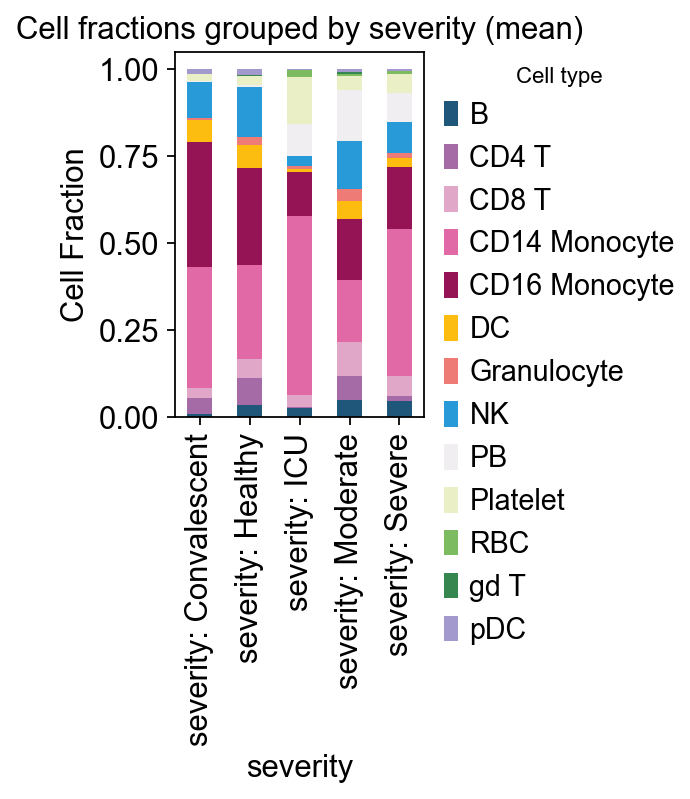
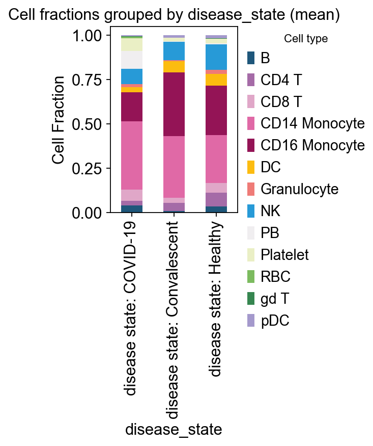
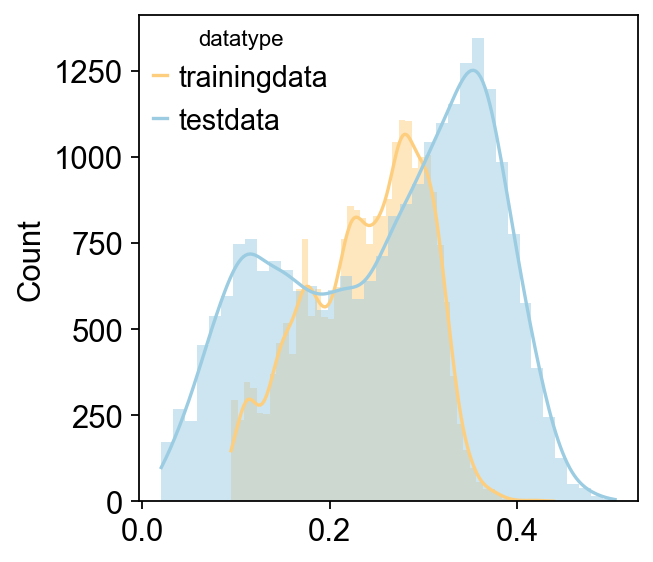
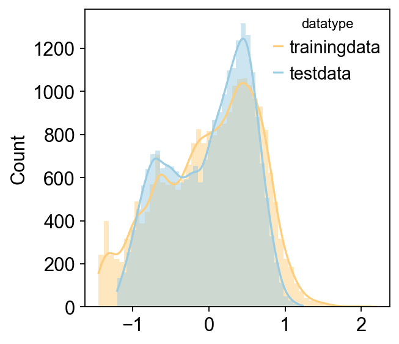
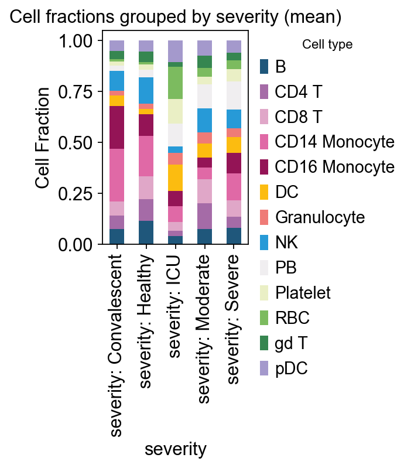
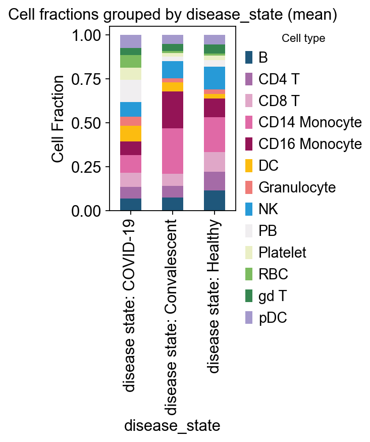

Bulk deconvolution with reference scRNA-seq¶
Cell type deconvolution is a computational framework designed for inferring the compositions of cell populations within a bulk heterogeneous tissue. Bulk deconvolution approaches can be divided into linear regression based methods, enrichment based methods, non-linear deep-learning based methods and others.
Here, we provide Bayesprime and scaden to infer the celltype compositions using scrna-seq as reference with class omicverse.bulk.Deconvolution. It is very easy for user to run bulk deconvolution via omicverse in python enviroments. we combined InstaPrism and pybayesprime to accerlate the calculation.
%load_ext autoreload
%autoreload 2
import omicverse as ov
ov.plot_set()
🔬 Starting plot initialization...
🧬 Detecting GPU devices…
✅ Apple Silicon MPS detected
• [MPS] Apple Silicon GPU - Metal Performance Shaders available
____ _ _ __
/ __ \____ ___ (_)___| | / /__ _____________
/ / / / __ `__ \/ / ___/ | / / _ \/ ___/ ___/ _ \
/ /_/ / / / / / / / /__ | |/ / __/ / (__ ) __/
\____/_/ /_/ /_/_/\___/ |___/\___/_/ /____/\___/
🔖 Version: 1.7.8rc1 📚 Tutorials: https://omicverse.readthedocs.io/
✅ plot_set complete.
1. Data prepare¶
To demonstrate the accuracy of our integrated bayesprime and scaden tools, we use bulk RNA-seq data from COVID-19 for this tutorial.
Bulk RNA-seq: We can obtain bulk RNA-seq data for COVID-19 through GSE152418, which includes 17 healthy controls, 16 COVID-19 patients, and 1 COVID-19 convalescent patient.
scRNA-seq: We can obtain scRNA-seq reference from cellxgene directly, which includes
healthyandCOVIDgroups to let us know the celltype compositions.
Besides, you can also directly download the propressed data from figshare (bulk rna-seq and scRNA-seq).
bulk_ad=ov.datasets.decov_bulk_covid_bulk()
bulk_ad
🧬 Loading COVID-19 PBMC bulk data
🔍 Downloading data to ./data/COVID_PBMC_bulk.h5ad
✅ Download completed
Loading data from ./data/COVID_PBMC_bulk.h5ad
✅ Successfully loaded: 34 cells × 60683 genes
AnnData object with n_obs × n_vars = 34 × 60683
obs: 'days_post_symptom_onset', 'gender', 'disease_state', 'severity', 'location', 'source'
Note
“The obs field can be left blank. If you have a bulk RNA-seq matrix, you can use ov.AnnData(count) to convert it to AnnData format. Just ensure that obs contains sample names and var contains gene names.”
single_ad_ref=ov.datasets.decov_bulk_covid_single()
single_ad_ref
🧬 Loading COVID-19 PBMC single-cell data
🔍 Downloading data to ./data/COVID_PBMC_single.h5ad
⚠️ File ./data/COVID_PBMC_single.h5ad already exists
Loading data from ./data/COVID_PBMC_single.h5ad
✅ Successfully loaded: 10000 cells × 24505 genes
AnnData object with n_obs × n_vars = 10000 × 24505
obs: 'nCount_RNA', 'nFeature_RNA', 'percent.mt', 'percent.rps', 'percent.rpl', 'percent.rrna', 'nCount_SCT', 'nFeature_SCT', 'seurat_clusters', 'singler', 'cell.type.fine', 'cell.type.coarse', 'IFN1', 'HLA1', 'donor_id', 'DPS', 'DTF', 'Admission', 'Ventilated', 'tissue_ontology_term_id', 'assay_ontology_term_id', 'disease_ontology_term_id', 'cell_type_ontology_term_id', 'development_stage_ontology_term_id', 'self_reported_ethnicity_ontology_term_id', 'sex_ontology_term_id', 'is_primary_data', 'suspension_type', 'tissue_type', 'cell_type', 'assay', 'disease', 'sex', 'tissue', 'self_reported_ethnicity', 'development_stage', 'observation_joinid'
var: 'feature_is_filtered', 'feature_name', 'feature_reference', 'feature_biotype', 'feature_length', 'feature_type'
uns: 'cell.type.coarse_colors', 'cell.type.coarse_colors_rgba', 'cell.type.fine_colors', 'cell.type.fine_colors_rgba', 'citation', 'disease_colors', 'disease_colors_rgba', 'organism', 'organism_ontology_term_id', 'schema_reference', 'schema_version', 'title'
obsm: 'X_pca', 'X_umap'
layers: 'lognorm', 'recover_counts'
Note
“It is important to note that our data are all raw counts. If your single-cell data have undergone log1p transformation, please use the omicverse.pp.recover_counts function to restore the raw expression matrix.”
bayesprime supports simultaneous input of major and minor cell types for deconvolution. In our single-cell data, major cell types are stored in single_ad_ref.obs[‘cell.type.coarse’], while minor cell types reside in single_ad_ref.obs[‘cell.type.fine’]. while the grouping labels are stored in single_ad_ref.obs[‘disease’].
ov.pl.embedding(
single_ad_ref,
basis='X_umap',
color=['cell.type.fine','cell.type.coarse'],
ncols=1
)
{kind=link}
ov.pl.embedding(
single_ad_ref,
basis='X_umap',
color='disease'
)
{kind=link}
We can use stacked bar charts to observe the distribution of cell proportions across different groups.
fig,ax=ov.plt.subplots(figsize = (1.5,3))
ov.pl.cellproportion(
adata=single_ad_ref,
celltype_clusters='cell.type.coarse',
groupby='disease',legend=True,ax=ax
)
2. Run bayesprime¶
In the omicverse, all deconvolution runs are performed through the same class. This means that if new methods are added in the future, only the method parameter needs to be modified, which greatly facilitates future benchmarking.
We first need to define the input bulk RNA-seq matrix and the reference scRNA-seq matrix.
deconv_obj=ov.bulk.Deconvolution(
adata_bulk=bulk_ad,
adata_single=single_ad_ref,
max_single_cells=10000,
celltype_key='cell.type.coarse',
cellstate_key='cell.type.fine',
)
......single-cell reference built finished
CUDA not available, using MPS backend instead.
Note
“The key celltype_key and cellstate_key can be set as same. This parameter is only used in the Bayesprime method; other methods do not involve minor cell types.”
res=deconv_obj.deconvolution(
method='bayesprism',n_cores=8,fast_mode=True
)
number of cells in each cell state
No tumor reference is speficied. Reference cell types are treated equally.
Number of outlier genes filtered from mixture = 5
Aligning reference and mixture...
Normalizing reference...
============================================================
FAST MODE: Using fixed-point iteration (50-500x faster)
Note: Results are approximate (correlation >0.99 with Gibbs)
============================================================
Fast deconvolution (fixed-point iteration)...
Note: 50-500x faster but approximate results (no update_gibbs)
Run fast deconvolution using fixed-point iteration (n_iter=100)...
Note: This is 50-500x faster but provides approximate results.
Fixed-point iteration 0: max_diff = 0.021858
Fixed-point iteration 10: max_diff = 0.012418
Fixed-point iteration 20: max_diff = 0.003776
Fixed-point iteration 30: max_diff = 0.001679
Fixed-point iteration 40: max_diff = 0.001075
Fixed-point iteration 50: max_diff = 0.000761
Fixed-point iteration 60: max_diff = 0.000556
Fixed-point iteration 70: max_diff = 0.000408
Fixed-point iteration 80: max_diff = 0.000300
Fixed-point iteration 90: max_diff = 0.000263
Completed in 29.16 seconds
Samples: 34
Converged: 0/34 (0.0%)
Average iterations: 100.0
Time per sample: 857.66 ms
Merging cell states to cell types...
Note
It is important to note that when we set the fast_mode parameter to True, we are actually invoking InstaPrime. In fact, the similarity between the two is as high as 0.99. If you wish to invoke BayesPrime, simply set fast_mode=False.
res=res[single_ad_ref.obs['cell.type.coarse'].cat.categories]
res.head()
| B | CD4 T | CD8 T | CD14 Monocyte | CD16 Monocyte | DC | Granulocyte | NK | PB | Platelet | RBC | gd T | pDC | |
|---|---|---|---|---|---|---|---|---|---|---|---|---|---|
| S145_nCOV001_C | 0.007152 | 0.045643 | 0.028839 | 0.350588 | 0.358540 | 0.063780 | 0.005991 | 0.102774 | 0.003153 | 0.019414 | 2.157114e-05 | 0.000909 | 0.013197 |
| S147_nCoV001EUHM-Draw-1 | 0.042290 | 0.064573 | 0.145169 | 0.207204 | 0.209637 | 0.064921 | 0.014626 | 0.176877 | 0.046780 | 0.014637 | 1.785132e-10 | 0.003598 | 0.009689 |
| S149_nCoV002EUHM-Draw-2 | 0.044652 | 0.002136 | 0.026601 | 0.435803 | 0.268785 | 0.032620 | 0.017837 | 0.083378 | 0.048856 | 0.034941 | 1.004674e-09 | 0.000243 | 0.004149 |
| S150_nCoV003EUHM-Draw-1 | 0.016705 | 0.004011 | 0.105450 | 0.345644 | 0.154792 | 0.024709 | 0.012880 | 0.160400 | 0.152966 | 0.018139 | 5.689293e-04 | 0.000129 | 0.003605 |
| S151_nCoV004EUHM-Draw-1 | 0.029047 | 0.000164 | 0.037455 | 0.610666 | 0.127016 | 0.009614 | 0.009160 | 0.023490 | 0.087138 | 0.062375 | 2.029203e-03 | 0.000016 | 0.001830 |
To maintain consistency in the color representation of single-cell cell types, we need to redefine color_dict.
color_dict=dict(zip(
single_ad_ref.obs['cell.type.coarse'].cat.categories,
single_ad_ref.uns['cell.type.coarse_colors']
))
ax = res.plot(kind='bar', stacked=True, figsize=(12, 3),color=color_dict)
ax.set_xlabel('Sample')
ax.set_ylabel('Cell Fraction')
#ax.set_xticklabels([])
ax.set_title('Bayesprism Cell fraction predicted')
ov.plt.legend(bbox_to_anchor=(1.05, 1),ncol=1,)
ov.plt.show()
{kind=link}
# example: severity
ov.pl.plot_grouped_fractions(
res, bulk_ad.obs, group_key='severity',
color_dict=color_dict, agg='mean', normalize=True,
figsize=(2,3)
)
# example: disease_state
ov.pl.plot_grouped_fractions(
res, bulk_ad.obs, group_key='disease_state',
color_dict=color_dict, agg='mean', normalize=True,
figsize=(2,3)
)
<Axes: title={'center': 'Cell fractions grouped by disease_state (mean)'}, xlabel='disease_state', ylabel='Cell Fraction'>
{kind=link}

{kind=link}

3. Run Scaden¶
Scaden is a tool for bulk RNA-seq cell type deconvolutional that uses a deep neural network ensemble trained on artificial bulk data simulated with scRNA-seq datasets.
Similar to BayesPrime, we also use the same deconvolution class when running scaden.
deconv_obj=ov.bulk.Deconvolution(
adata_bulk=bulk_ad,
adata_single=single_ad_ref,
max_single_cells=10000,
celltype_key='cell.type.coarse',
cellstate_key='cell.type.fine',
gpu='mps'
)
......single-cell reference built finished
Using Apple Metal Performance Shaders (MPS) backend.
Note
Since Scaden is a deep learning-based approach, we need to configure the device for running torch, including Nvidia’s CUDA, Apple’s MPS, or running directly on the CPU.
Compared to BayesPrime, scaden requires more parameters to configure, including scaler, scale, and datatype. For scaler, this determines how we normalize the pseudobulk generated from single-cell reads and the actual bulk data. Scale, however, indicates whether we need to perform min-max normalization on the data before feeding it into the scaler.
res2=deconv_obj.deconvolution(
method='scaden',scaler='ss',scale=True,datatype='counts',
pseudobulk_size=2000,
)
Reading single-cell dataset, this may take 1 min
Reading dataset is done
Normalizing raw single cell data with scanpy.pp.normalize_total
Generating cell fractions using Dirichlet distribution without prior info (actually random)
RANDOM cell fractions is generated
You set sparse as True, some cell's fraction will be zero, the probability is 0.5
Sampling cells to compose pseudo-bulk data
Sampling is done
Reading training data
Reading is done
Reading test data
Reading test data is done
Using counts data to train model
Cutting variance...
Finding intersected genes...
Intersected gene number is 23734
Scaling...
Using standard scaler...
training data shape is (2000, 23734)
test data shape is (34, 23734)
train model256 now
train model512 now
train model1024 now
Training of Scaden is done
{kind=link}

{kind=link}

Note
It is crucial to note that while the original implementation of scaden supports TPM, RPKM, and similar metrics, we strongly recommend using raw count data to ensure algorithm consistency.
res2=res2[single_ad_ref.obs['cell.type.coarse'].cat.categories]
ax = res2.plot(kind='bar', stacked=True, figsize=(12, 3),color=color_dict)
ax.set_xlabel('Sample')
ax.set_ylabel('Cell Fraction')
#ax.set_xticklabels([])
ax.set_title('Scaden Cell fraction predicted')
ov.plt.legend(bbox_to_anchor=(1.05, 1),ncol=1,)
ov.plt.show()
{kind=link}
# example: severity
ov.pl.plot_grouped_fractions(
res2, bulk_ad.obs, group_key='severity',
color_dict=color_dict, agg='mean', normalize=True,
figsize=(2,3)
)
# example: disease_state
ov.pl.plot_grouped_fractions(
res2, bulk_ad.obs, group_key='disease_state',
color_dict=color_dict, agg='mean', normalize=True,
figsize=(2,3)
)
<Axes: title={'center': 'Cell fractions grouped by disease_state (mean)'}, xlabel='disease_state', ylabel='Cell Fraction'>
{kind=link}

{kind=link}
